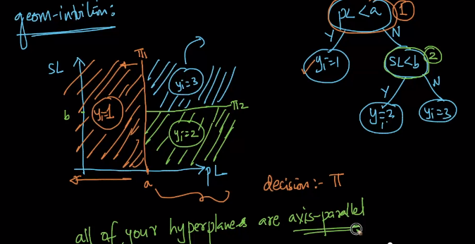

Decision Trees
Braindump#
Decision Tree is a greedy algorithm? Since it is impossible to consider all possible splits, it is a greedy algorithm.
Fig. 30 Regression Tree for Penguin Dataset#
Vocabulary Term |
Definition |
Example |
|---|---|---|
Node |
A node is comprised of a sample of data and a decision rule. |
In a decision tree, each box represents a node. For example, node A in a penguin classification tree might contain data on penguins with flipper lengths under 206.5mm and a decision rule based on bill length. |
Parent, Child |
A parent is a node in a tree associated with exactly two child nodes. Observations directed to a parent node are next directed to one of that parent’s two children nodes. |
In a decision tree, node A is a parent node with two child nodes B and C. Observations that satisfy the decision rule at node A are directed to one of its child nodes. |
Rule |
Each parent node has a rule that determines toward which of the child nodes an observation will be directed. The rule is based on the value of one (and only one) of an observation’s predictors. |
In a decision tree, the decision rule at node A might be “If bill length <= 43.35mm, go to node B; otherwise, go to node C.” |
Buds |
Buds are nodes that have not yet been split. In other words, they are children that are eligible to become parents. Nodes are only considered buds during the training process. Nodes that are never split are considered leaves. |
In a decision tree, before node A is split into nodes B and C, it is a bud. |
Leaf |
Leaves, also known as terminal nodes, are nodes that are never split. Observations move through a decision tree until reaching a leaf. The fitted value of a test observation is determined by the training observations that land in the same leaf. |
In a decision tree, nodes B and C are examples of leaves. Observations that satisfy the decision rule at a leaf node are assigned the corresponding fitted value, which is typically the average of the training observations in that leaf. |
Intuition#
Let us use one of our favourite dataset Iris and just use 2 features, Petal length (pl) and Sepal length (sl). Given a query point \(x_{q}\) with only two features, we aim to predict \(y_{q}\)’s class, whether it is 1, 2 or 3.
A decision tree, like its name, is simply asking questions. In a simplified manner, it is merely a yes-no binary question. Programmers can easily relate with a nested if-else statement.
if pl < a: # yes
y = class 1
else: # no
if sl < b:
y = class 2
else:
y = class 3
This seems simple, we first ask whether \(pl < a\) as the main question, if yes, the our query point is of class 1, if not, we simply check if \(sl < b\), if yes, then it is of class 2, and class 3 otherwise.
This seems simple, but the keen learner may soon ask: which feature to choose as main node? We will answer this later, but in a nutshell, decision tree does the above, and as we traverse through the nodes, we end up with a final answer (on the class).
Note \(a, b\) are just cutoff points for the variable \(pl, sl\), which denotes in (cm).
Geometric Intuition#
Following the image below, we can visualize it in image below.
\(\pi_{1}\): our hyperplane here denotes our first if question, which is our first decision boundary, simply put, left side of \(\pi_{1}\) is the class 1.
\(\pi_{2}\): our hyperplane here denotes our decision on if \(sl < b\), and see that anything below this plane is class 2.
\(\pi_{3}\): this follows to be class 3.
All hyperplanes are axis-parallel, that is to say, each hyperplane (decision boundary) is parallel to x or y axis (assuming 2 dimensional space) and can be generalized.

Notations and Definitions#
root node: First note in a tree.
internal node: Non root and non leaf node, this is where we make decisions.
leaf/terminal note (leaf): End of the node where no decisions are made but points to a class label.
Entropy (Information Theory)#
Read my notebook named entropy.ipynb for more information.
KL Divergence#
Read my notebook named kl_divergence.ipynb for more information.
Information Gain#
Information Gain: The information gained by splitting the current (sub)-dataset using the attribute.
Recall: Information Gain is a metric that measures the expected reduction in the impurity of the collection \(S\), caused by splitting the data according to any given attribute. A chosen attribute \(x_i\) divides the example set S into subsets \(S_1 , S_2 , ... , S_{C_i}\) according to the \(C_i\) distinct values for \(x_i\) . The entropy then reduces to the entropy of the subsets \(S_1 , S_2 , ... , S_{C_i}\):
The Information Gain (IG; “reduction in entropy”) from knowing the value of \(x_i\) is:
Subsequently, we choose the attribute with the largest IG.
Gini Impurity#
Assumptions#
Hypothesis Space and Learning Algorithm#
Decision Tree Algorithm#
ID3 (Both Classification & Regression)#
Invented by Ross Quinlan, ID3 uses a top-down greedy approach to build a decision tree. In simple words, the top-down approach means that we start building the tree from the top and the greedy approach means that at each iteration we select the best feature at the present moment to create a node.
Classification#
Given a dataset \(\mathcal{S}\), with a list of tuples \((\mathrm{x}, \mathrm{y})\) where we assume that \(\mathrm{y}\) has unique labels
[0,1]. Note the rest of the notations remain the same, (i.e. m = num_samples, n = num_features).Given a pre-defined metric \(\mathcal{H}\) where in the case of classification we use Entropy, where for Regression we use MSE. In particular, from this pre-defined metric, we can find the Information Gain of each sub-dataset, we will discuss later, but for now the notation for this is \(IG\).
Calculate the total entropy of \(\mathcal{S}\), more concretely, we do the below:
Calculate the class frequency for both classes, it should be in the form of $\(y^{+} = \dfrac{\text{num positives}}{m}\)\( \)\(y^{-} = \dfrac{\text{num negatives}}{m}\)$
If all examples are positive, Return the single-node tree Root, with label = +.
If all examples are negative, Return the single-node tree Root, with label = -.
Calculate total entropy of \(\mathcal{S}\) to be \(\mathcal{H}(\mathcal{S})\)
Assume further that \(n = 3\)
Take in a the whole dataset \(D\) in the shape of
(num_samples, n_features)Split \(D\) into \(D_x, D_y\).
Get
m = num_sample, n = num_feature.In our first iteration, we get the best split:
```python {'bounds': 0.1, 'feat_idx': 3, 'info_gain': 0.26899559358928116, 'left': array([[4.9, 3.1, 1.5, 0.1, 0. ], [4.3, 3. , 1.1, 0.1, 0. ]]), 'right': array([[5.1, 3.5, 1.4, 0.2, 2. ], [5.1, 3.5, 1.4, 0.2, 1. ], [4.7, 3.2, 1.3, 0.2, 1. ], [4.7, 3.2, 1.3, 0.2, 2. ], [4.9, 3. , 1.4, 0.2, 2. ], [5. , 3.6, 1.4, 0.2, 1. ], [5.1, 3.5, 1.4, 0.2, 1. ], [4.6, 3.4, 1.4, 0.3, 1. ], [5. , 3.6, 1.4, 0.2, 2. ], [5.4, 3.7, 1.5, 0.2, 2. ], [4.9, 3. , 1.4, 0.2, 1. ], [4.7, 3.2, 1.3, 0.2, 0. ], [4.6, 3.4, 1.4, 0.3, 0. ], [5.4, 3.7, 1.5, 0.2, 1. ], [5.7, 4.4, 1.5, 0.4, 2. ], [4.4, 2.9, 1.4, 0.2, 1. ], [5.7, 4.4, 1.5, 0.4, 1. ], [4.6, 3.1, 1.5, 0.2, 2. ]])} ```
Pros and Cons#
Cons#
Overfitting#
This is well known, if you just use a very naive and plain decision tree, then it is almost guaranteed to not generalize well. A prime example modified from Data Science From Scratch is as such:
For the sake of example, we are using features of a customer of a bank to predict his credit default rating (discrete ratings). And also just hypothetically say, we are also using a potentially useless feature security social number which is uniquely generated for each customer (note in real world, I do not think we will be feeding this feature in in the first place as in general, we cannot derive useful information from this number). Then further assume, our tree splits to the last node, where the last node is the security number attribute, and then our tree will have \(m\) nodes, where \(m\) is the number of data (assume distinct customers in dataset). This will cause a problem, because each node has 0 entropy and future predictions will always look into this node of security number (actually if the SSN is unique, then how does tree go down to that unique number for unseen predictions)?
High Variance#
This term is almost a synonym to overfitting. Decision Trees are often termed as a model with high variance. Quoting a well explained answer from here, it says:
Intuitive answer
It is relatively simple if you understand what variance refers to in this context. A model has high variance if it is very sensitive to (small) changes in the training data.
A decision tree has high variance because, if you imagine a very large tree, it can basically adjust its predictions to every single input.
Consider you wanted to predict the outcome of a soccer game. A decision tree could make decisions like:
IF
player X is on the field AND
team A has a home game AND
the weather is sunny AND
the number of attending fans >= 26000 AND
it is past 3pm
THEN team A wins.
If the tree is very deep, it will get very specific and you may only have one such game in your training data. It probably would not be appropriate to base your predictions on just one example.
Now, if you make a small change e.g. set the number of attending fans to 25999, a decision tree might give you a completely different answer (because the game now doesn’t meet the 4th condition).
Linear regression, for example, would not be so sensitive to a small change because it is limited (“biased” -> see bias-variance tradeoff) to linear relationships and cannot represent sudden changes from 25999 to 26000 fans.
That’s why it is important to not make decision trees arbitrary large/deep. This limits its variance.
(See e.g. here for more on how random forests can help with this further.)
Follow Up post on how RF can help mitigate
Can connect back to intuition of ensembling by Francis.
The idea of random forests is basically to build many decision trees (or other weak learners) that are decorrelated, so that their average is less prone to overfitting (reducing the variance). One way is subsampling of the training set. The reason why subsampling features can further decorrelate trees is, that if there are few dominating features, these features will be selected in many trees even for different subsamples, making the trees in the forest similar (correlated) again and we do not want them to be too similar!
The lower the number of sampled features, the higher the decorrelation effect. On the other hand, the bias of a random forest is the same as the bias of any of the sampled trees (see for example Elements of Statistical Learning), but the randomization of random forests restrict the model, so that the bias is usually higher than a fully-grown (unpruned) tree. You are correct in that you can expect a higher bias if you sample fewer features. So, “feature bagging” really gives you a classical trade-off in bias and variance.